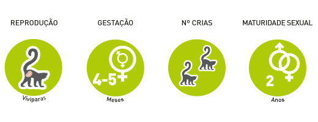
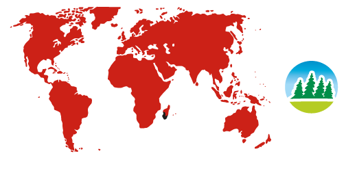

Ring-tailed lemur
Lemur catta
Order: Primates
Family: lemur
Characteristics

It is the size of the animal and cat-like strapping it to some extent with the posture and issued notes.
Lifestyle

This leads to the ground-living scantily overgrown, dry and rocky areas.
Breeding

Gestation lasts 134-138 days.
Nesting site

Deforested areas and rocky highlands.
Protection

Threats: More often fall prey to poachers.
Interesting facts
- Tailed Lemurs have been promoted through a series of animated fimów Madagascar and television animated series The Penguins of Madagascar, where the species is representative of Julian King.